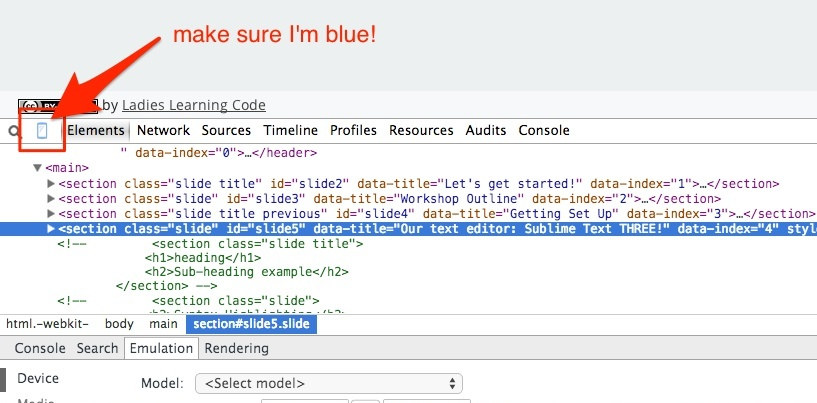
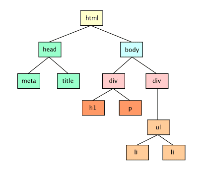

Let's get started!
Workshop Outline
Part One: Fundamentals
- Setting up our environment (computers)
- What is responsive design?
- Thinking mobile and responsive
- Crash course in HTML5
- CSS fundamentals
Lunch Break!
Part Two: Implementation
- CSS fundamentals continued
- HTML + CSS for responsive design: key features
- Tools to test your designs
- Images
- Typography
- Navigation
Getting Set Up
The WIFI
Name: The Lab
Password: Thisisthelab
Our text editor: Sublime Text THREE!
No Dreamweaver, Word, etc. please!
Our Browser: Google Chrome
Firefox, Safari, and IE 10+ are great, but their dev tools are different so stick to Chrome for this class please!
Make sure your default browser is Chrome! Here are the instructions to do that.
Our Emulator: the Chrome Web Inspector
Right click > "Inspect Element" > ensure little phone is blue!
What is Responsive Design?
Different types of web design:
In order to understand mobile/responsive web design and development, we have to understand what our options are:
- Fixed
- Fluid
- Adaptive
- Responsive
Fixed web design
- What it sounds like!
- Everything has a set width (eg. 960px). A holdover from before mobile "smart" devices were common.
- Resize the browser, or look at it on a mobile screen and nothing will change
- You'll need an "m dot" site if you want something mobile friendly :(
Example: toronto.ca (open this up on your phone or use the web inspector)
Example: m.facebook.com
Fluid web design
- Based on percentages
- Each block of content takes up some percentage of the page, for example a sidebar with a width of ~30% and main section with a width of ~70%
- When you resize the browser, the blocks of content will resize relative to the size of the page (aka the "viewport")
- Not made for specific devices. Just reducing the width of your content is usually not the best experience for small screens, doesn't give us enough control.
Adaptive web design
- Uses a series fixed layouts
- Then adds in media queries to target specific viewport sizes
- The content itself changes
- Best to think of it as a set of fixed layouts that are envoked in response to the device size
Example: goo.gl/lUyNrZ
And finally...responsive web design!
- Uses a fluid grid layout to get that sweet free adaptability
- Also uses media queries to change the look and feel depending on device size
- So your grid is both flexible inbetween common device sizes, and designed with breakpoints so that content is presented in the most suitable way for the device.
- Content stays largely the same or similar.
Example: goo.gl/JNfJ5X
What do you notice about the changing layout?
Recap
This website illustrates all the differences we just discussed:
Let's head over there and take a look and try to point out the differences.
One more concept: mobile-first design
We used to design with only a desktop in mind, this has changed with smartphones and tablets, giving rise to "mobile first design"
What is it?
"When you lose 80% of your screen real estate, all the extraneous bloat that tends to finds its way onto large screen designs doesn’t seem so attractive or necessary anymore. Mobile provides a great opportunity to reevaluate what content/functionality is necessary and gives us an opportunity to strip away the cruft across the board (and not just for mobile users either). These constraints also encourage ease-of-use, intuitiveness and speed as essential ingredients to a good user experience."Brad Frost, The Many Faces of Mobile First
Crash Course in HTML5
A bit of background info
HTML5, or "HyperText Markup Language" is what we wrap the content of our site in. It's the only thing you truly need to have a website.
However, it takes on default styles of the browser. Uuuuugly. We'll learn how to override these styles in a bit with CSS, which is where we do all our cosmetic changes.
For now, let's open up our starter HTML file, html-ex1.html in your "examples" folder
This is it!
This is everthing you need for your HTML file to work properly in a browser.
NOTE: those things inside of <!-- --> are comments!
Go ahead and type anything inside the <body></body> tags
Then refresh your browser's page to see the results!
Tags/Elements
Those things with the angled brackets are called HTML "elements", they tell the browser what kind of content each of the bits of your website is.
There's almost always an "opening" tag and a "closing" one. The closing tag has a forward slash. Example: opening paragraph tag: <p> closing paragraph tag: </p>
You close tags in the reverse order in which they appear, just like in math. For example, in this code block:
<span><a href="#"><p>paragraph wrapped in a link wrapped in a span</p></a></span>
The span opens, the "a" (a link or "anchor" tag) opens, then the paragraph opens. The paragraph closes, the link closes, then the span closes.
Important Note!
Remember, HTML is about content, it has default browser styles but it is not for styling your document. That's what CSS is for, and we need to keep the both separate!
So let's review what we've learned so far and keep going. Open up our second HTML example file, html-ex2.html
Siblings, Parents, and Children
Elements can have "relationships" with other elements in the HTML document.
If you put one element inside of another, the element on the outside is the "parent" element, while the one inside is the "child" element. You can have many child elements inside of a parent, but they all only have one parent.
Two or more elements that are both children of the same element are called "siblings" - they are on the same level as each other. For example the <head></head> and <body></body>elements in every HTML document
Parent, Child, Siblings Example
<body> <!--this body element is a parent to the div element and normally a child of the html element-->
<div> <!--this div is a child of the body element, and a parent of the p elements-->
<p>I am a sibling of the p below me! I am also a child of the div.</p>
<p>I am a sibling of the p above me! I am also a child of the div</p>
</div>
</body>
Notice the way that the tags are indented, so that you can easily read the HTML and see what is a child, parent, and sibling of what elements. This will come in handy later, so keep up this way of indenting (2 spaces or one tab)
HTML Element Relationships:
Don't worry about what each of these are, we'll go over that very soon. Just look at the structure.
What are all the Elements?
We'd be here all day if we had to go over every single HTML5 element - there's so many!
Here's a handy list of all the ones in use today. The ones with the little orange "5" beside them are new for HTML5.
Don't worry, you don't by any means need to memorize all of these!
For your reference, I've made a list of the most commonly used tags in the examples folder called html-elements.txt. Take a look!
One more thing...HTML Attributes!
Elements can have things called "attributes". There's also lots of attributes, but don't worry there's only a few you'll need to know for this workshop:
- "class" or "id", used mostly for styling
- "href", used in the opening anchor tag, it contains a URL for the link
- "alt", used as alternate text if the website can't represent the content or a screen reader is being used
- "src", meaning source, used mostly for images, gives the url path for the embedded content
Here's another handy list of all of them!
Enough talk, more code!
Now that we've gone over a lot, let's go through an HTML document together and practice what we've learned!
Open up html-ex3.html from your examples folder.
Goodbye Defaults, Hello CSS!
Intro to CSS
CSS stands for "Cascading Style Sheets"
CSS is what we use to tell the browser how to style our HTML document - it's for making things pretty and usable/accessible
Just like HTML, CSS has it's own way of writing it that we have to learn. It looks a little something like this:
CSS and HTML
A CSS document is made up of a bunch of lines of code, or "rules", that keep referring back to the HTML elements in our HTML document
These rules are always made up of a selector and one or more declarations
Each declaration has a property and a value
The selector tells what element(s) to apply the styling to
The declaration contains what styles to apply
An Example
body {
background-color: pink;
color: white;
font-family: Helvetica, Arial, sans-serif;
font-size: 16px;
}
p {
border: 1px solid #333;
color: #000;
font-weight: italic;
}
Here we have two selectors (body and p) and they each have their own sets of declatarions inside the { } brackets. The body selector has four declarations, while the p selector has three.
An Example cont.
Thank you!
My email: eeporta@gmail.com
Slide deck created with Lea Verou's CSS-based SlideShow System and reveal.js.